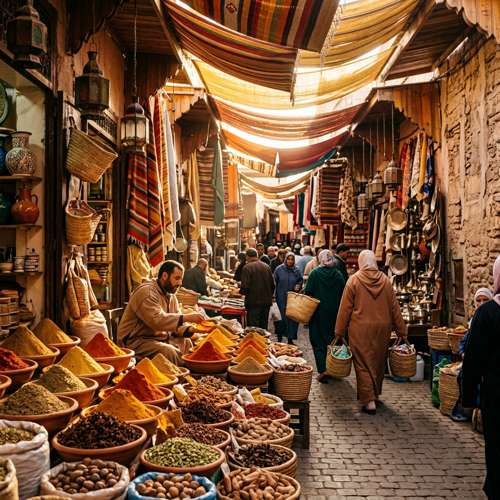

Footprint Map
每一个发光的坐标，都是一段难忘的记忆
Destinations
按图索骥，在世界地图上寻找属于我的每一段风景

Timeline
沿着时间的河流，重温每一段旅途中的温柔与震撼
2025年3月
在冰与火的国度里，追逐极光、穿越冰川，感受大自然最原始的力量。
2025年1月
在世界尽头的峡湾中，听冰川融水的声音，看云雾在山间缠绵。
2024年11月
漫步在铺满红叶的小径，感受千年古都在秋日里的温柔与从容。
2024年8月
白色的穹顶、蔚蓝的爱琴海，每一帧都像一幅完美的油画。
2024年5月
在层叠的梯田上迎接第一缕阳光，在乌布的密林中找到内心的宁静。
2023年10月
走进马拉喀什的集市迷宫，在香料与色彩的海洋中迷失又重逢。
2023年4月
在世界的尽头，面对百内三塔的壮丽，所有的疲惫都化为渺小的感叹。
2023年2月
雨后的涩谷十字路口，霓虹灯映在积水上，整座城市都在闪烁。
Gallery
用瀑布流的方式，沉浸在每一帧旅途中的光影之中
About Me
一个热爱用镜头记录世界的旅行者
从2018年背起第一台相机开始，我便踏上了用影像记录世界的旅程。从冰岛的极光到巴厘岛的梯田，从东京的霓虹到巴塔哥尼亚的冰川，每一次按下快门，都是对这个星球之美的一次致敬。
我相信旅行不仅仅是到达目的地，更是一种重新认识自己的方式。在路上的每一天，我都在学习用更谦卑的心去看待这个世界，用更细腻的目光去捕捉那些稍纵即逝的瞬间。